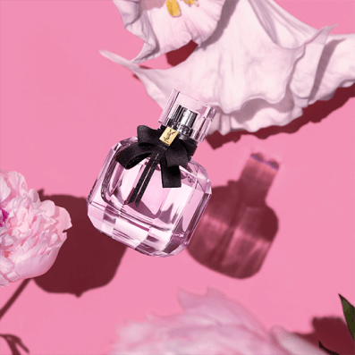

W warstwie głowy zapachu przeważają owocowe nuty
dojrzałej gruszki, soczystej truskawki, słodkiej maliny, tangerynki i
wyrazistej pomarańczy.
Nuty serca to kwiatowa kompozycja stworzona z
delikatnego bielunia, kobiecej piwonii, kwiatu pomarańczy i urzekającego
jaśminu.
Baza wody perfumowanej Mon Paris to przede wszystkim
szyprowe nuty paczuli, cedru i mchu.
Całość wieńczy delikatny
akcent słodkiej wanilii.
